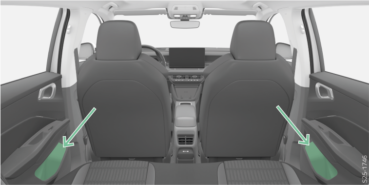

<!-- topicId: 74a0d9a2febf85f3463ff53a952d533e_1_fr_FR | type: topic -->
<h1>Vue d’ensemble</h1>
<html data-dyxml-version="2"><div lang="fr-FR"><div class="topic-content"><section data-type="topic-allgemein" data-dl-contains="block" id="ID_fdfc375d7b9742f5ac1445250efae2c5-1992f30601784a4aac144525329e1349-fr-FR"><p id="ID_646e96617b9742f5ac1445257a1069dc-1992f30601784a4aac144525329e1349-fr-FR"></p><div data-role="block" data-type="block" id="ID_58e55ea97b9742f5ac1445253c19ed1c-1992f30601784a4aac144525329e1349-fr-FR" hasIllu="true"><div data-type="illu" id="ID_0cec9c6fb62a11f08d14cca8f6b8798d-1992f30601784a4aac144525329e1349-fr-FR"><div data-class="vw-layout-narrow" data-dl-wrapper="figure" id="d6266500e34"><figure id="ID_431cb81007086bfdac1445251a0fd24c-1992f30601784a4aac144525329e1349-fr-FR" data-role="" data-type="" data-position=""><div><a data-fancybox="group" media-link="" class="fancybox" data-href="../media/img549e6bd8ca84dcd5ac14452541f3cc94_1_--_--_PNG_3x.png" data-options="{&#34;buttons&#34;:[&#34;fullScreen&#34;, &#34;thumbs&#34;, &#34;close&#34;],&#34;hash&#34;:false}"></img></a></div></figure></div></div></div><div data-role="block" data-type="block" id="ID_b03a980439248439c0a8013b467de92f-1992f30601784a4aac144525329e1349-fr-FR"><p data-type="p" id="ID_d90a61263928084aac14452555d870c8-1992f30601784a4aac144525329e1349-fr-FR">L’étagère est prévue pour ranger der bouteilles avec un contenu max. de 1 l.</p></div><div></div></section></div></div></html>